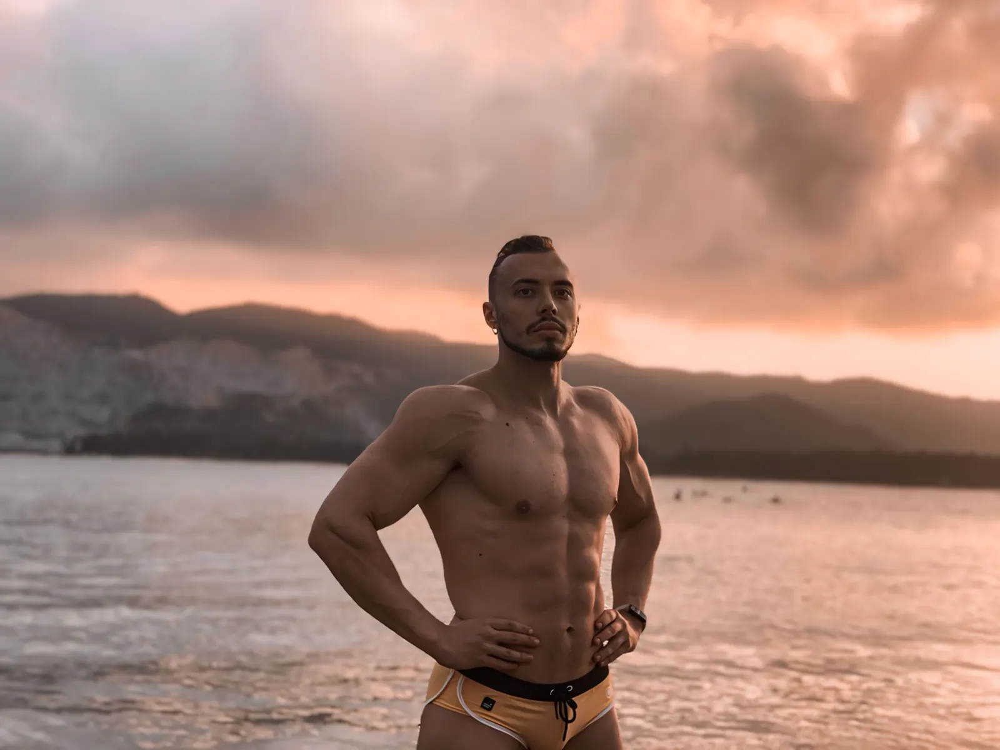

Портрет
Естественный свет, анфас и три четверти — без изменения черт лица.
Лицо. Форма. Характер.
МОДЕЛЬ / АКТЁРСКИЕ КАСТИНГИ / В КАДРЕ
Не только внешность. Присутствие.
Атлетический типаж. Работа с движением и камерой. Открыт к коммерческим и творческим проектам.
Атлетическая подготовка, пластика движения и опыт работы с камерой. Разные образы — один узнаваемый характер.
Архивные снимки и стилизованные образы обозначены отдельно.
Смотреть портфолиоПортрет, пластика, характер. Галерея подготовлена для оригинальных съёмок — без чужих лиц и искусственных «кастинг-фото».

Один выразительный образ вместо десятков случайных изображений. Брендовая съёмка отражает настроение, но не заменяет настоящие фотографии для кастинга.
Фотографии разных периодов и форматов. Они показывают внешность, движение и характер, но не подменяют актуальные кастинговые снимки.
Для кастинга нужны реальные фотографии. Здесь появятся актуальные портреты, ростовые кадры и съёмки в движении.
Естественный свет, анфас и три четверти — без изменения черт лица.
Честные пропорции, нейтральная поза и чёткий силуэт.
Спортивная динамика, естественная пластика и фактура.
Здесь появятся только оригинальные фотографии для реального кастинга.
Без придуманных параметров и пустых обещаний. Только то, что действительно поможет при кастинге.
CASTING SPECS / 2026
Вес и талия ориентировочные. Уточняются перед подтверждением съёмок.
Уверенный в движении. Естественный перед камерой.
Fashion, спортивная реклама, lifestyle, кинематографический портрет, характерная реклама.
Многолетняя силовая подготовка, бодибилдинг, кикбоксинг, динамическая работа.
Собственные видеосъёмки и работа перед камерой. Профессиональная фильмография не заявляется.
Я — Павел Марков. Мой язык — движение, характер и работа с людьми.
Больше 14 лет спорт — часть моей жизни. Силовая подготовка, дисциплина и внимание к деталям движения сформировали мой типаж.
Работа тренером и съёмки видеоконтента дали опыт публичного общения и присутствия перед камерой. Мне интересны роли и проекты, где есть характер, физика и смысл.
Коммерческие, fashion, спортивные и экранные проекты. Открыт к предложениям.
КОНТАКТЫ ДЛЯ БУКИНГА
Контакт для кастингов появится после подтверждения. Пока можно поделиться этой страницей или сохранить анкету.